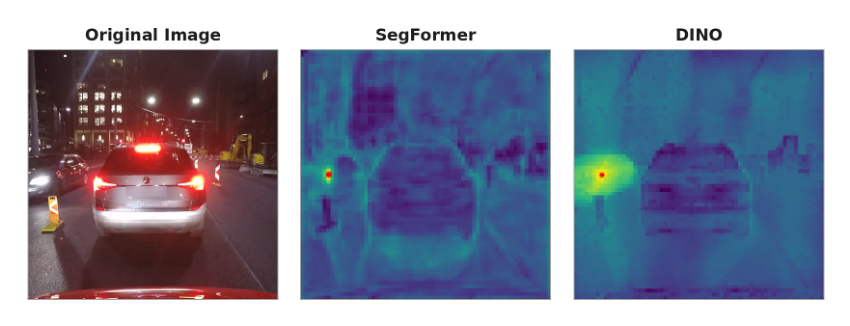
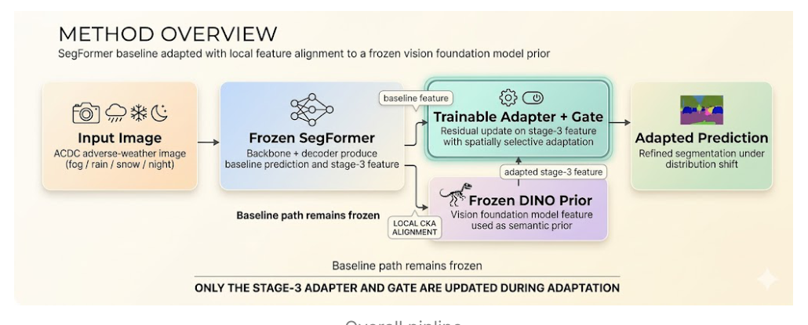

Problem
Segmentation models trained on clear urban scenes degrade sharply when weather and illumination change. The failure mode differs by condition, so a single uniform constraint is not enough.
Robust Perception Under Distribution Shift
A lightweight adaptation study for urban semantic segmentation under fog, rain, snow, and night. The project uses SegFormer as the segmentation baseline, DINOv3 as a frozen semantic prior, and local feature alignment diagnostics to improve robustness while preserving semantic consistency.

Segmentation models trained on clear urban scenes degrade sharply when weather and illumination change. The failure mode differs by condition, so a single uniform constraint is not enough.
ACDC is used as the adverse weather benchmark. SegFormer is the baseline. DINOv3 provides a frozen semantic prior for feature level alignment.
Improve adverse weather robustness with a small adaptation module while keeping the backbone path frozen and preserving semantic consistency.
SELO freezes the SegFormer baseline path and updates only a trainable stage 3 adapter and gate. DINOv3 features are used as a semantic prior, and local CKA alignment is used to diagnose whether the adapted features stay structurally aligned under distribution shift.

Tracks feature correspondence patterns across stages and weather conditions during adaptation.
The 10 epoch summary shows positive gains overall and across fog, night, rain, and snow.
Problem definition, setup, and method summary for adverse weather segmentation.
Open Page 1Method overview, local CKA trend, and mIoU results after 10 epochs.
Open Page 2Qualitative results, project role, and next research direction.
Open Page 3